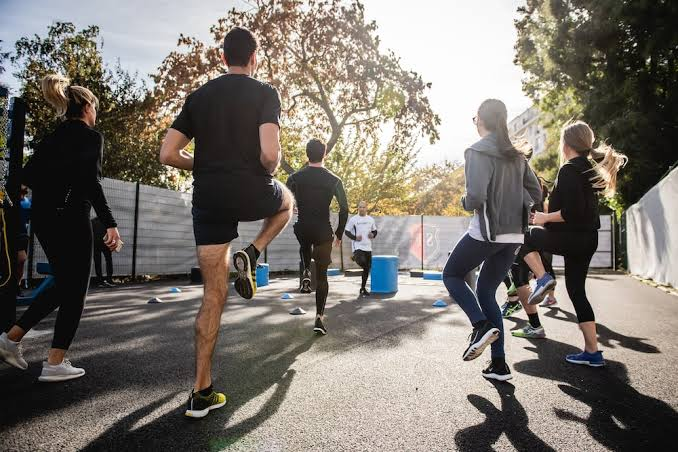

5 olahraga yang gak populer di indonesia
ebagai negara yang kaya akan jumlah penduduk, Indonesia sudah melahirkan sejumlah atlet yang menjadi juara di kompetisi-kompetisi level dunia
baca selengkapnya ...

Manfaat Olahraga Bagi Kesehatan Mahasiswa
Terdapat berbagai manfaat olahraga yang dapat ditemukan dalam kehidupan sehari-hari. Tentunya, olahraga yang dilakukan secara optimal, konsisten, dan menyesuaikan dengan kemampuan, dapat memberikan beragam manfaat baik bagi tubuh. Mulai dari memperlancar proses metabolisme, tubuh menjadi lebih bugar, dan dapat mencegah berbagai penyakit.
baca selengkapnya ...7 Olahraga Ringan di Pagi Hari yang Mudah Dilakukan, Jadi Penambah Energi
Setiap orang memiliki waktu yang berbeda-beda dalam hal berolahraga. Namun, salah satu waktu terbaik untuk menggerakkan badan adalah di pagi hari
baca selengkapnya ...